Obanazawa
Obanazawa · Yamagata
Obanazawa
Highlighted on the Yamagata map.
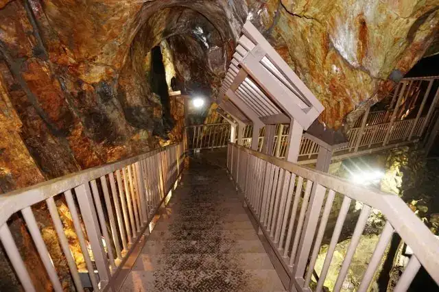
Stay
旅館 藤屋
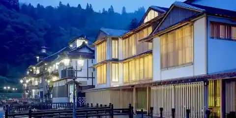
Ryokan Fujiya
Ryokan inn in Obanazawa, Yamagata.
旅館 松本
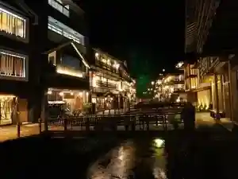
Ryokan Matsumoto
Ryokan inn in Obanazawa, Yamagata.
銀山温泉 古勢起屋別館
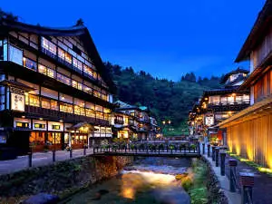
Ginzan Onsen Ko Sei Ki Ya Bekkan
Onsen lodging in Obanazawa, Yamagata.
銀山温泉 旅館 永澤平八
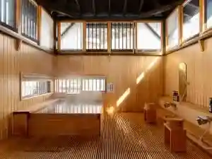
Ginzan Onsen Ryokan Nagasawa Heihachi
Ryokan inn in Obanazawa, Yamagata.
銀山温泉 御宿 やなだ屋
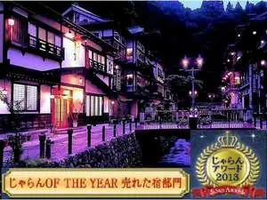
Ginzan Onsen Onjuku Yanada Ya
Onsen lodging in Obanazawa, Yamagata.
能登屋旅館
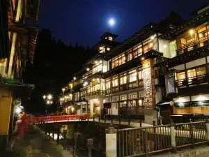
Noto Ya Ryokan
Ryokan inn in Obanazawa, Yamagata.
Dining
滝と蕎麦の宿 瀧見館
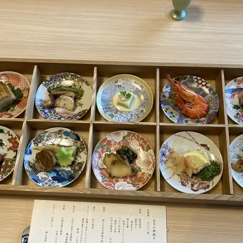
Taki To Soba No Yado Taki Ken Kan
Ryokan restaurant in Obanazawa, Yamagata.
そば処 滝見亭
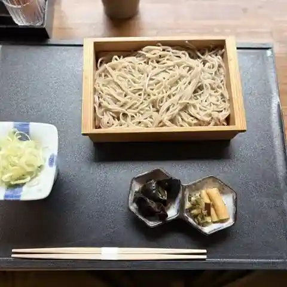
Soba Tokoro Takimi Tei
Soba restaurant in Obanazawa, Yamagata.
伊豆の華
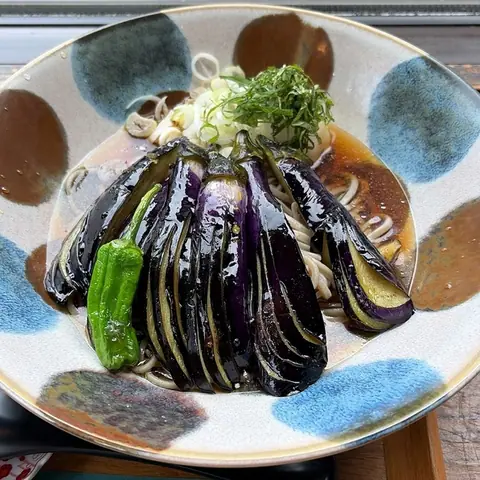
Izu No Hana
Soba restaurant in Obanazawa, Yamagata.
手打ちそば たか橋
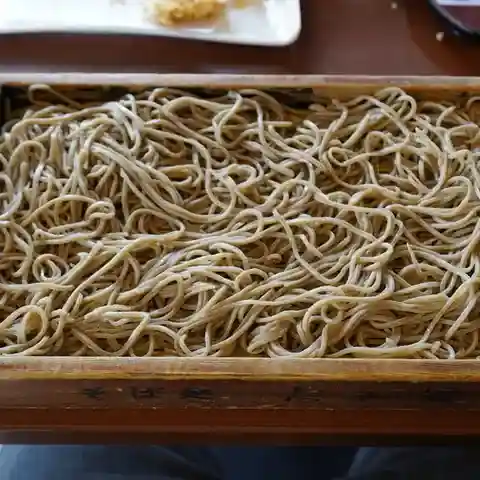
Teuchi Chisoba Taka Hashi
Soba restaurant in Obanazawa, Yamagata.
クリエ
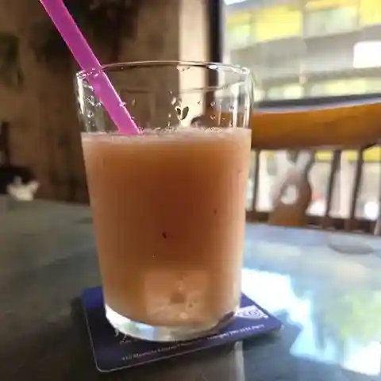
Kurie
Café in Obanazawa, Yamagata.
ささにしき食堂
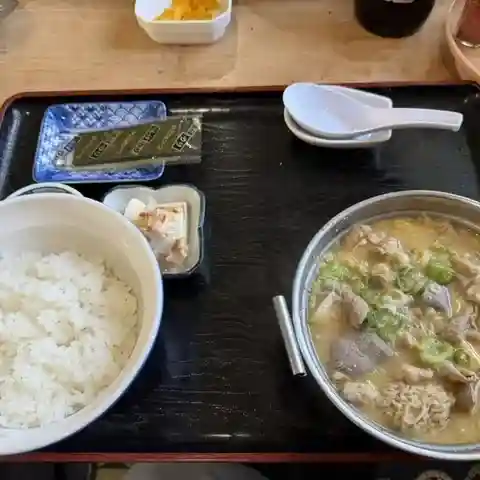
Sasanishiki Shokudou
Shokudo diner in Obanazawa, Yamagata.
そば処鶴子
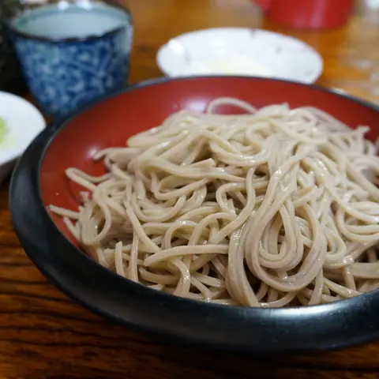
Soba Tokoro Tsuruko
Soba restaurant in Obanazawa, Yamagata.
銀山温泉 湯けむり食堂 しろがね
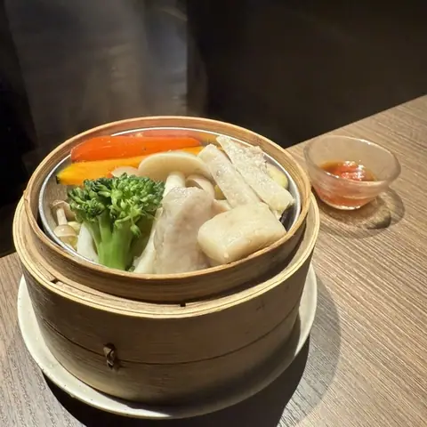
Ginzan Onsen Yu Kemuri Shokudou Shirogane
Dining bar in Obanazawa, Yamagata.
めいゆう庵
Meiyuu Iori
Japanese sweets shop in Obanazawa, Yamagata.
仙峡の宿 銀山荘
Sen Kyou No Yado Ginzan Sou
Ryokan restaurant in Obanazawa, Yamagata.
竹八
Take Hachi
Ramen shop in Obanazawa, Yamagata.
明友庵
Akitomo Iori
Soba restaurant in Obanazawa, Yamagata.
野川亭
Nogawa Tei
Creative-cuisine restaurant in Obanazawa, Yamagata.
銀山温泉 旅館 藤屋
Ginzan Onsen Ryokan Fujiya
Ryokan restaurant in Obanazawa, Yamagata.
そばや匠
Sobaya Takumi
Soba restaurant in Obanazawa, Yamagata.
とんかつ渡邊
Tonkatsu Watanabe
Tonkatsu restaurant in Obanazawa, Yamagata.
一ばん そば家
Ichi Ban Soba Ie
Shokudo diner in Obanazawa, Yamagata.
道の駅 尾花沢 花笠の里 ねまる
Michi No Eki Obanazawa Karyuu No Sato Nemaru
Roadside-station eatery in Obanazawa, Yamagata.
古勢起屋 別館
Ko Sei Ki Ya Bekkan
Inn restaurant in Obanazawa, Yamagata.
柏屋
Kashiwa Ya
Soba restaurant in Obanazawa, Yamagata.
古山閣
Furuyama Kaku
Inn restaurant in Obanazawa, Yamagata.
昭和館
Shouwa Kan
Inn restaurant in Obanazawa, Yamagata.
尾花屋
Obana Ya
Soba restaurant in Obanazawa, Yamagata.
Sights
Ginzan Onsen
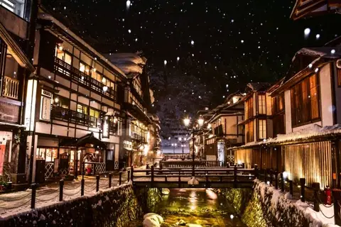
This classic hot spring town lined with traditional wooden architecture is full of photogenic nostalgia!
Lake Tokura
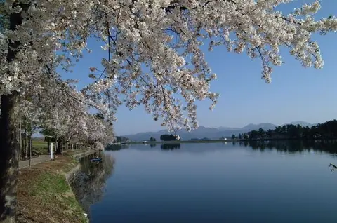
A man-made irrigation lake built in the Taisho era; the famous Hanagasa dance is said to have grown from the work songs sung during its construction. Cherry trees line the shore in spring, and migrating birds winter here.
Michi-no-Eki Obanazawa
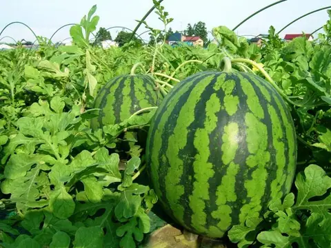
A busy roadside station with places to eat, souvenirs and a farm stand. As the birthplace of the Hanagasa dance it sells flower hats, along with traditional crafts, local sweets and same-day-harvested produce.